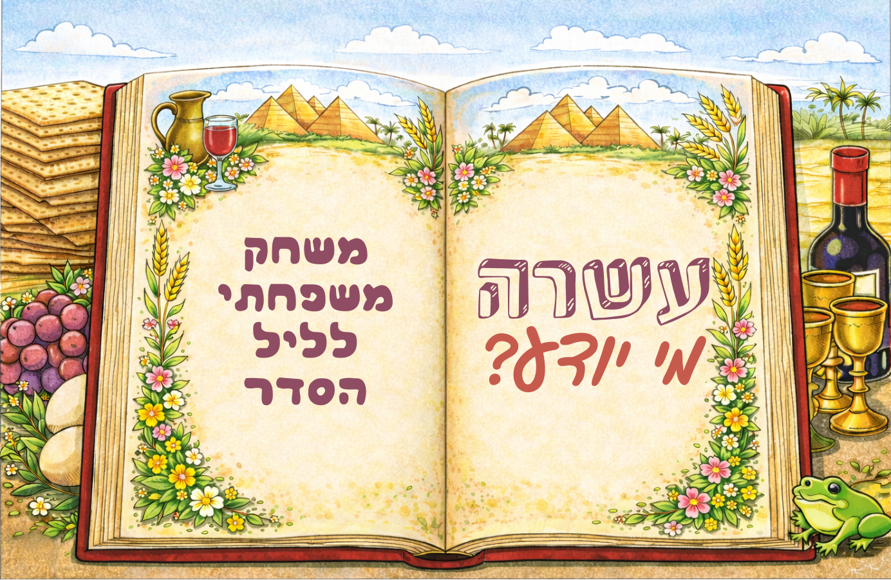
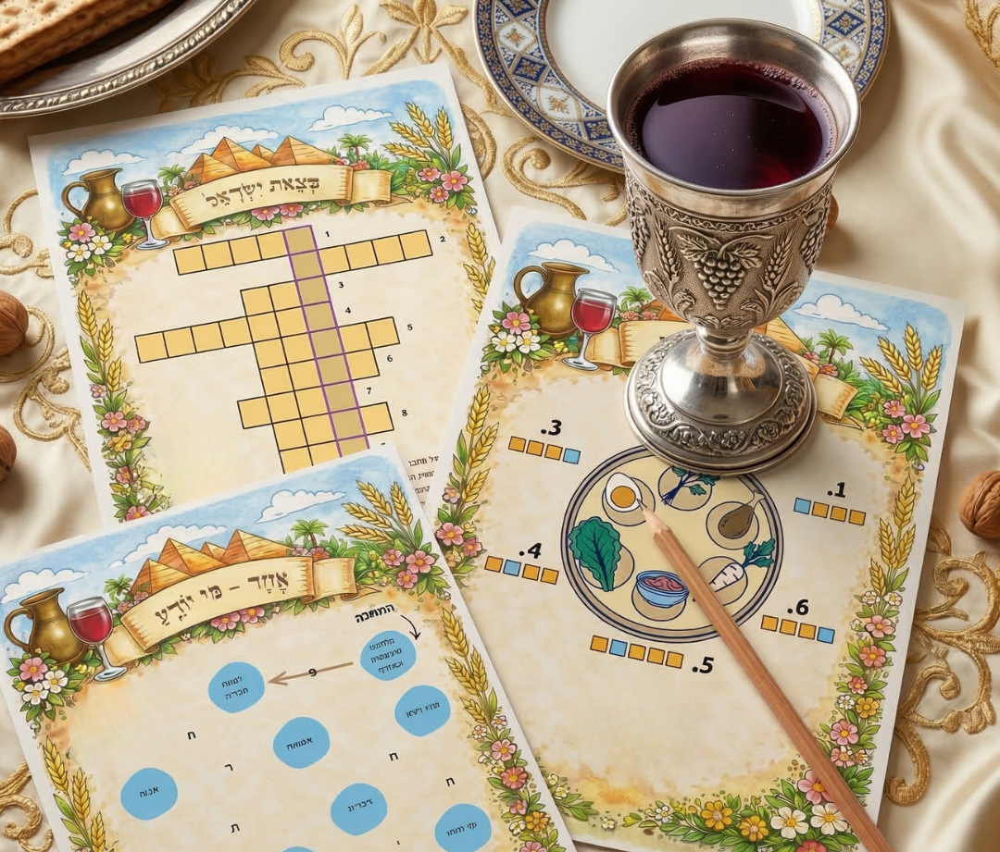
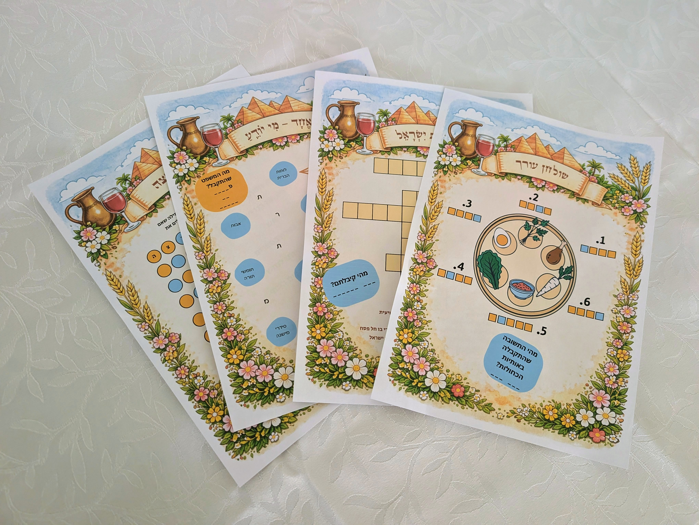

עשרה - מי יודע?
מחפשים דרך להפוך את ליל הסדר לחוויה אינטרקטיבית ומהנה לכל המשפחה?
"עשרה - מי יודע?" הוא משחק להדפסה ביתית, מלא בעשרה עמודי חידות (ועוד חידת בונוס) שאותן תוכלו לפתור תוך כדי ההתקדמות בהגדה.
המשחק נבנה כך שכל חידה קשורה לחלק אחר בסדר - מהקידוש ועד האפיקומן - ומשלבות ידע על החג, חשיבה יצירתית, ואתגרים.
מדפיסים בבית, מחלקים לשחקנים, ונותים לסדר הפסח טוויסט מיוחד!
גיבוש משפחתי
חשיבה יצירתית
משחק שילווה אתכם בליל הסדר
להדפסה ביתית

